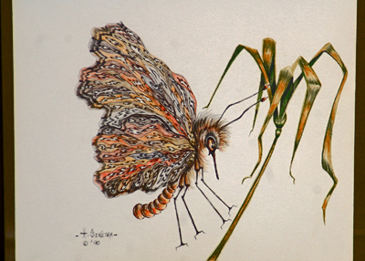

 |
The Butterfly For my beloved Heidi ( my most beautiful butterfly) November 2006
Last night Northern winds In packs of gusts, Blustered through the woods, Across the marsh, Swept around the farms, Followed the county roads And stormed into town Spitting beads of ice And spreading thin frost down.
Down out of the hills Coyotes sing in chorus The song of winter's coming. Standing on the porch I listen and look to the west, Trying to read the melody And meaning of their song. I catch beads of frozen ice, Against my face. I sense the moving of low clouds, Even in midnight's realm. The tall pine catches wind Gusts hushing each Through its boughs, Then releasing each one Out into the night.
The next morning, Out the back door, Through the Aspens, Past the oaks, Up the cone, I am determined to know The extent of the wind's War against the night. My breath plumes Against morning sky, The sun breaks Out of the horizon Revealing layers of auburn, blues, And reds.
Deep prairie grass, Now in grays, browns, and bronze Seems ablaze in glistening Frost. I mark my way slowly, Less I disturb Nature's artwork Painted across the land In strong, deep wind brush strokes. She's left a shining Canvas sparkling Amidst the rising sun.
There, Alone, Delicately balanced On wild Chrysanthemum, Its daisy like petals Stiff and cold, A yellow Monarch Butterfly, Perched still, Placed so gently, More perfect than any artist hand Could paint, carve, or Craft, It Remains frozen Atop the flower's delicate Brown eye. I am perplexed, Humbled, And caught in questions Of my beliefs. How could nature Have made such a fatal Mistake? I kneel down, And I wonder. I cannot touch, Nor breathe upon My discovery, Afraid I might break The wonder I see Where it has been placed So delicately.
A puzzle given to me, I sit amongst the tall grass, Watching the sun light Pour down from cold skies, How did such a butterfly Remain so long and far behind? How did this beauty Miss the coming of winter's Time?
I pick the flower at its stem, Gently, Without touching the Butterfly. I place it softly, Easily, Inside a tall jar, Carrying it carefully down The hill, Through the wood, And home again. I place it open, On my fireplace mantle, Wondering what will Happen whence It is given warmth again. I leave the Butterfly On its flower petals, And return to the wood, A store of chores To which I must attend.
Hours later, When I return home again, I look to see what the Story might be of the Butterfly And the flower. To my amaze, The Butterfly is gone. I search the floor, The mantel, The shelves below, For the life of me, I cannot find, Where surely the Butterfly Had to fall. Then, looking up, I see a wonder, Beyond me, On the ceiling, Wings waving softly Back and forth, The Butterfly Has awakened again. Astounded, I fall back into My wide red chair, Watch the Buttefly As it flies around Amidst the warm Inside air. Perching here then there, It is a wonder, It has risen again.
As the day warms, The sun pours, And opens southern doors, Whence warm gentle wind, Brings forth again A day of fall, An afterthought of summer, And the afternoon Turns frost to dripping eves, Ice to water Runs down sidewalks, Out into streets. I open my front door, Push open the screen, And wait to see, If the Butterfly, Out of its frozen sleep, Will find its way into the sun again. Then, to my surprise, With the first gentle warm wind Through the door, Rushed through the house, The butterfly catches the soft drift, And floats softly out the door, Up in the draft, And disappears, Into the late afternoon sun, Now pouring warmth Out of western skies.
How amazed am I, By this Butterfly. Surely it was frozen And had died. Yet, So beautiful, I could not resist Taking to heart Such work of art. Only to be amazed to find, It was just frozen in sleep, Waiting for the sun to rise. So, I am once again surprised, At the strength, Of one so fragile, So delicate, So beautiful, In its yellow adorn, I thought dead, But rather, Just sleeping Through the storm.
Once again, I learn by surprise, A lesson I shall Carry with me, A lesson of beauty. How one of such delicate And fragile being, Really has strength, Will, And magic Beyond my seeing. Off into southern skies The Butterfly flies And I remain, A witness to the difference Between God, nature and man, What is truth, And what it is I so humbly understand.
|
|